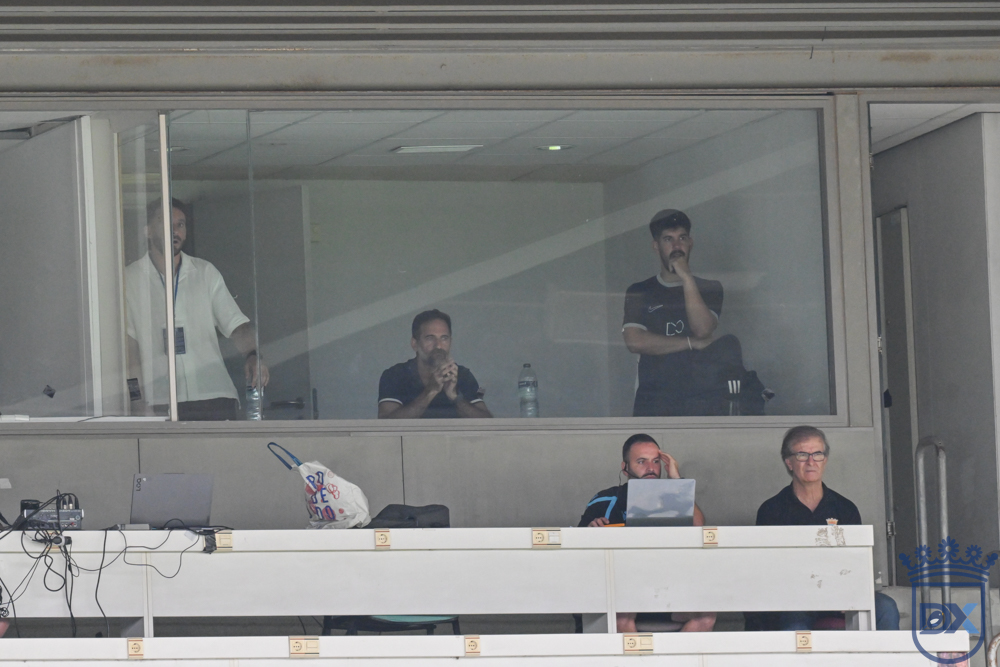

Abel Segovia: "Children should not have to see things they should not see"

Photo: Diario XerecistaThe Xerez CD coach approaches the Copa del Rey derby at Chapín with the greatest enthusiasm, trusts the emotional factor to drive his players, calls for a celebration of football without incidents and accepts that the poor state of the pitch will hurt both sides.
The Estadio Municipal de Chapín is getting ready to host a match with the feel of the great nights of the past. Xerez CD face Cádiz CF this Wednesday in a cup tie that has generated enormous anticipation. The blue-and-whites' coach, Abel Segovia, spoke at a press conference to preview a historic occasion, showing undiminished ambition and the absolute conviction that his squad has more than enough to stand up to opponents from a higher division.
Motivation and home advantage as the derby's levellers
Although on paper the visitors are the favourites as a Segunda División side, Abel Segovia believes that the emotional side and the scale of motivation can level things out on the pitch: "There is a lot of desire and excitement, we can't wait for the match to come so we can do things well and compete against a great team. You are facing a Segunda team and for them coming here is not the motivation it should be, whereas for us it is the highest. Playing against our rival from the province is a showcase for the players".
Far from fearing that the tension around the game might end up freezing his players before kick-off, the Sevillian coach prefers to turn that racing pulse into positive energy for the match: "I'm not worried about over-excitement; in fact, I want us to have it, because in the end that gives you the spirit and the strength to keep going in the match when your strength runs out. We know who we are up against and what we are going to find. Hopefully it will be a celebration of football and at the end of the match we will be happier than them".
Changes to the line-up and analysis of the opponent
Asked about the possibility of Cádiz arriving with numerous changes to their starting line-up, Segovia revealed that the home side will also give chances to those who have played less in the league, without that reducing their chances of winning: "We are also going to make changes because there are people who deserve it, who are working very well and I think they have to come in. I will pick the eleven who I believe will compete in the best conditions to go for the match".
On the current form of the Cádiz side and their tactical patterns after the change of coach, the Xerez manager admitted to having studied his opponent's play in depth: "We had analysed Cádiz under the previous coach and we have had to watch the Ceuta match the other day, where they were able to recover from 0-1 down. They do quite a lot of good things, but we have explained to the players what we have to do to counter their strengths and take advantage of their weaknesses".
Real concern over Chapín's battered pitch
Once again, one of the most critical issues ahead of the match is the state of the Chapín pitch, worn down after hosting several consecutive matches over the weekend. Segovia did not hide his concern, although he refused to use it as an excuse in advance: "The pitch worries me, of course it does. We are a team that wants to have the ball, create numerical advantages from the back and have pace up front, and if the pitch is in poor condition it is harder for us. The other day there were moves in which, by having to take an extra touch, we gave the opponent time to get into position. It hurts both of us, but there is no excuse: eleven against eleven, the pitch will be however it has to be and you have to know what to do at every moment".
The coach also stood up for the performances of his squad at the start of the regular season, showing his complete faith in the dressing room: "I don't agree that the team's true potential hasn't been seen. I think we have done very good things and we are getting better and better, although we are lacking accuracy in front of goal. In a one-off match we can compete with anyone and hopefully we will be up to it".
A call for respect between the fans and for setting an example to children
Finally, Abel Segovia wanted to send a message of harmony and sportsmanship to both sets of supporters, with the large crowd that will pack the stands at Chapín, urging them to live the derby with passion but without crossing the limits of good manners: "I ask for it to be a celebration of football and for us to show the whole of Spain what we can become. Let there be cordiality, respect and rivalry properly understood. Above all, that children don't see things they shouldn't see; we have to set an example because we move a lot of people".
🇪🇸 Leer en español ← Back to home